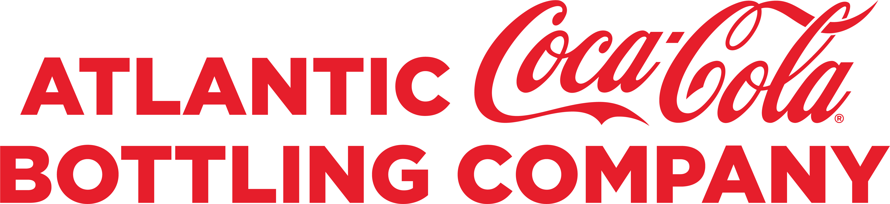

Digital Product Management:
In this class I was able to learn many different skills, including building websites through
html, testing in python, learning the frameworks of scrum project management, and many more!
Business Analytics Capstone Project:
 In this class I was given the opportunity to work for the Atlantic Bottling Company, the distributor
of Coca-Cola products in the midwest. My team was tasked to look into factors including ads, ad types,
flavors of Coke and different packaging to see how we can maximize trade spend and increase volume.
Our first task was to clean the data. We were given spreadsheets of ad data for the past 3 years and
weekly sales data. We needed to ensure that all of the spreadsheets we were working with were consistent
with eachother. We reformatted the weekly sales data to create one column for week, a column for sales and
a column for units. Originally, there were columns for each week of the year.
Once all the data was cleaned, we created dummy variables for ad types, packages, and months. This will
allow us to run linear regression models to see which variables were most significant to the contribution
of sales. We can then come up with reccomendations on what ads they should be focusing on.
We are currently working on finalizing our conclusions for Atlantic Bottling Company. More information
will be presented soon!